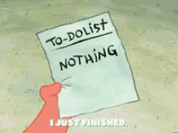

How I switch from Holiday mode to Work mode (and vice versa)
Jan 8 '22 • Written by Yassen Shopov
📖 6 minute read
As the holiday season's end draws near, we are faced with the reality - school/work is beginning again.
Often, the holiday season becomes an unexpected trap. You get home, you celebrate, you probably eat a bit too much. And when the time comes for you to return to your “normal”, celebration-free lifestyle, it’s often more difficult than not.
The opposite could also be true. Especially if you happen to be a freelancer, whose work does not start and end from 9 to 5, it gets difficult to make a clear separation between work time and rest time. It becomes almost a chore to get yourself into a festive mood when you have so much work on your plate.
Luckily, there are a few practices that you can use to make the switch between work mode and holiday mode a smoother one. In this article, I will share how I manage to make the most of both my holiday periods and my university semesters, while also developing my personal brand on the side.
Expect the (un)expected
It may seem like a common practice in the self-help and productivity fields, but using a to-do list is actually more of an art than science and is thus very easy to get wrong.
Usually, when you are at the beginning of a fresh semester, or you are just returning to work at the beginning of a work season, you get presented with a rough, vague schedule of what is supposed to happen on a large scale in the following month(s). When talking about a task list, predictability is your best friend. The more you can anticipate future events, assignments, projects, deadlines, the better you can prepare. It is usually the unexpected events that throw us off course and make us lose inertia.
So what can you do about the events and to-dos that you can’t anticipate? As you can read in detail here, allowing for buffer time (extra time allotted for the duration of a task, to allow for wiggle room) is a great way to keep your peace of mind.
And of course, secondly, just accept the fact that you can’t anticipate everything. There are just some events that will jump into your schedule that you’ll have to deal with and that’s not so bad. However, you should make a clear distinction between expected and unexpected events. We often tend to neglect a task and lie to ourselves that it came all of a sudden when it comes by.
Observe the differentiation. Here are some unexpected events:
Your car breaks down and you need to fix it.
Getting sick.
Getting a bonus assignment at school.
And here are some to-be-expected events that we often naively label as “unexpected”:
Doing the Christmas shopping for gifts.
Exams.
Going shopping when you run out of something.
Integration
It would be pure bliss if we could only work while not on holiday, and don’t even think about work during the holiday itself, right?
Maybe, but as most ideal things, it’s impossible to achieve. What is more, I can argue that it is actually not a good thing to not think one bit about work during your rest periods.
I would recommend integrating some amounts of work into your rest, and vice versa.
There are some small tasks, usually arranging and scheduling your future work, that you can deal with while not busy, and it may actually end up helping you get work done faster in the long term. It’s one of those things that cost some energy and time in the present but save you time on a larger time horizon. Think of planning as an investment if the time and energy of your future self.
And getting back to the topic of rest, we tend to do it naturally, but anyway, allow yourself to rest every now and then even when it’s busy. We humans are complex machineries and we rarely operate purely on autopilot for a long while before burning out and needing an oil-check. Try to set some hard limits on when your work/study day starts and ends and allow yourself to rest actively with your favourite activities in those periods.
Think in sprints
The programmers anong you would find this rather intuitive. A “sprint” is a term often used by software development companies and it’s related to project management. Oftentimes, companies work on projects so large they can’t possibly be finished within one “run”.
This is why they often split it up into smaller intervals, in which tasks and subtasks are ordered and delegated. This makes the process much more manageable, as you can always review at the end of one sprint and realign your efforts to do an overall better job.
When talking about sprints in our work life, I’d say it’s helpful to think of your assignments, projects and tasks as goalposts. When you turn them into milestones, you can better track progress and actually feel like you have finished your work when the sprint ends.
[12:05]
by Thomas Frank